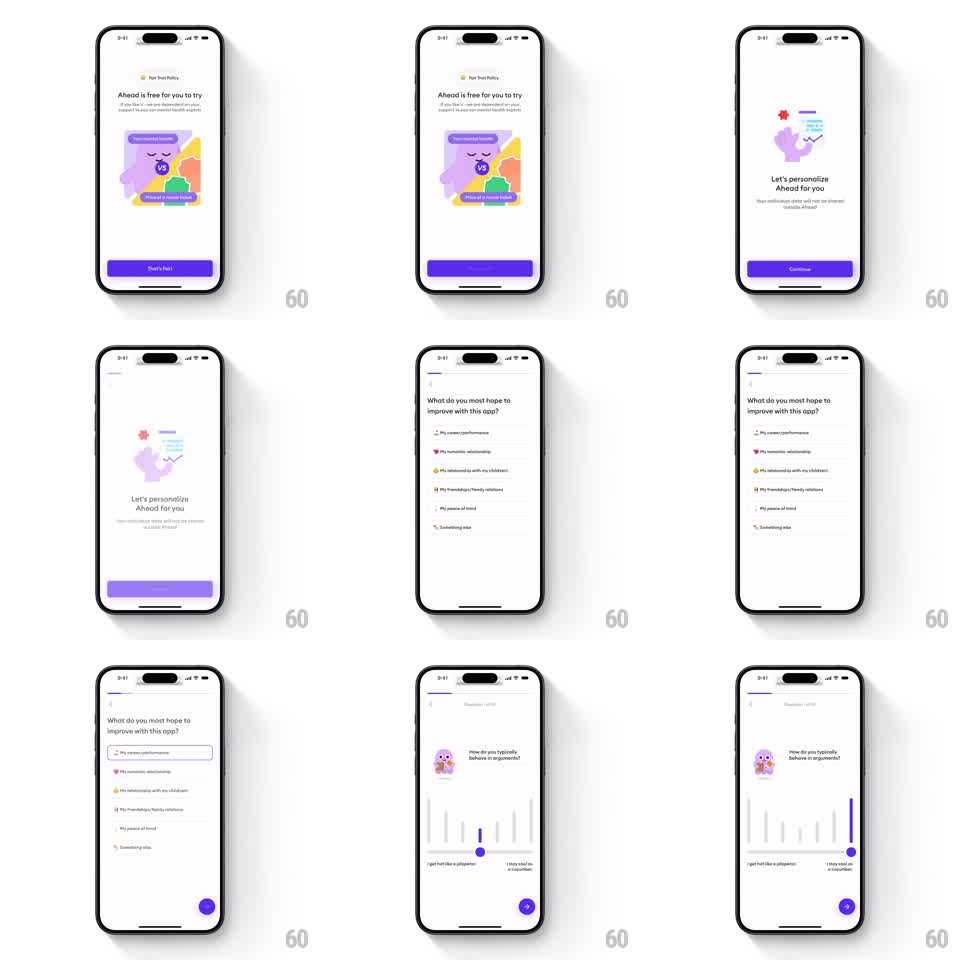

Media
Frame-by-frame

Rebuild this interaction 1:1: Ahead's onboarding flow - a free-trial promise card, a multi-select personalization question, and a custom vertical-bar slider for the "How do you typically behave in arguments?" question, where dragging fills bars purple up to the touch point between two labeled poles.

Rebuild this interaction 1:1: Ahead's onboarding flow - a free-trial promise card, a multi-select personalization question, and a custom vertical-bar slider for the "How do you typically behave in arguments?" question, where dragging fills bars purple up to the touch point between two labeled poles. ## Integration Integration: stack-agnostic spec - springs given as stiffness/damping, timed motions as duration + curve; map every value to your framework and animation library of choice. ## Scene White onboarding screens with a thin progress bar top left and back chevron. Screen 1: "Ahead is free for you to try" over an illustration card (mascot, VS badge), purple "That's fair" button. Screen 2: "Let's personalize Ahead for you" with Continue. Screen 3: "What do you most hope to improve with this app?" - a list of answer rows with small emoji icons; tapping one gives it a rounded border highlight. Screen 4: "How do you typically behave in arguments?" with mascot, and the slider: a row of ~20 vertical gray bars of varying heights forming a flat-top silhouette, end labels "I get hot like a jalapeno" and "I stay cold as a cucumber". A purple arrow FAB sits bottom right. ## Motion spec Pattern: bar-fill slider with selectable answer rows. - Screen pushes slide horizontally (translateX 100% to 0, 300ms, ease-out); the progress bar grows per step (width spring, stiffness ~200, damping ~22). - Answer rows: on tap, the border draws in (opacity + border-width over 150ms) with a soft scale 0.98 press. - The bar slider: bars from the left up to the touch x turn purple; dragging updates the fill 1:1 with no smoothing. On release the selection settles to the nearest bar (150ms). - Touched bars also grow slightly (scaleY 1.0 to 1.08 around their baseline) while the finger is down, springing back on release (stiffness ~350, damping ~20). - The FAB enables (gray to purple, 150ms) once the slider has a value. ## Calibration - The fill must track the finger exactly; the playful part is the bar scale, not lag. - Bars vary in height by design - fill color changes, bar height does not (except the press bump). ## Reduced motion Bar fill and selection change instantly; screen pushes become crossfades. ## Don't miss - The two pole labels are part of the slider's meaning - keep them anchored under the first and last bars. - The progress bar at top advances on every answered step, including the slider.